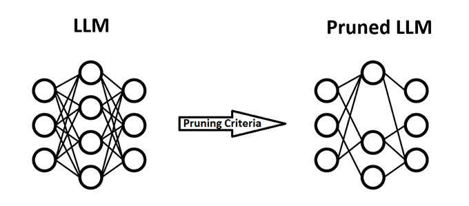
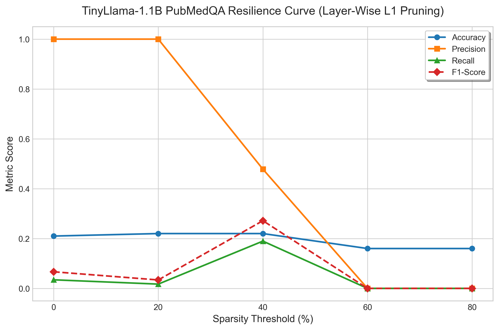

BioMedical LLM Lobotomy
Spring 2026 CSCI 5541 NLP: Class Project - University of Minnesota
The Lobotomizers
Brandon Borzello
Shantanu Dalvi
Brandon Borzello
Shantanu Dalvi
Large Language Models (LLMs) require massive computational resources, which results in barriers to deployment in resource-constrained medical environments. While research such as the Lottery Ticket Hypothesis and SparseGPT demonstrates that general-purpose neural networks are extremely over-parametrized and compressible, the limits of this sparsity when it comes to a specific field like medical knowledge is largely unexplored. In this proposal, we outline our procedure for a study using unstructured magnitude pruning on the BioMistral-7B and Mistral architectures. By evaluating the model on the PubMedQA and cais/mmlu datasets using increasing levels of sparsity, we are aiming to find the precise computational cost of retaining specialized medical reasoning and establish a resilience curve for domain-specific LLMs.
This figure is from StyLEx.

We are essentially trying to sever specific connections within the model while maintaining its overall performance.
What did you try to do? What problem did you try to solve?
Modern LLMs have billions of parameters, which result in the requirement of massive amounts of computing power, as seen by the surge in data center construction and GPU purchases by large tech companies. The sheer scale of this computing has resulted in impressive models that perform well across many subjects; it also makes it nearly impossible to run these models in resource-constrained or offline environments.
What are your objectives?
The core issue is that we do not know for certain how much of the massive parameter counts these models boast are strictly necessary for specialized, specific knowledge of particular fields. Our goal is to determine how much redundancy is present inside biomedical LLMs. More specifically, we want to know: How many of the biomedical LLMs' parameters can be pruned before it experiences a drastic falloff in medical knowledge and diagnostic accuracy?
How is it done today, and what are the limits of current practice?
Ut enim ad minim veniam, quis nostrud exercitation ullamco laboris nisi ut aliquip ex ea commodo consequat.
Who cares? If you are successful, what difference will it make?
Duis aute irure dolor in reprehenderit in voluptate velit esse cillum dolore eu fugiat nulla pariatur.
What did you do exactly? How did you solve the problem? Why did you think it would be successful? Is anything new in your approach?
First, we will begin with a baseline evaluation at 0% sparsity. We will evaluate their performance on all three of our datasets. Next, using a custom PyTorch script, we will systematically zero-out the lowest-magnitude weights across the layers of both models. We will be using increments of 10%. At each sparsity threshold, we will run an evaluation loop. For the MMLU subsets, we will only track Classification Accuracy. For PubMedQA, we will track Accuracy, Recall, Precision, and F1-Score. Next, we will visualize the data using graphs and charts.
What problems did you anticipate? What problems did you encounter? Did the very first thing you tried work?
Sed ut perspiciatis unde omnis iste natus error sit voluptatem accusantium doloremque laudantium, totam rem aperiam, eaque ipsa quae ab illo inventore veritatis et quasi architecto beatae vitae dicta sunt explicabo.
How did you measure success? What experiments were used? What were the results, both quantitative and qualitative? Did you succeed? Did you fail? Why?
Nemo enim ipsam voluptatem quia voluptas sit aspernatur aut odit aut fugit, sed quia consequuntur magni dolores eos qui ratione voluptatem sequi nesciunt.
| Experiment | 1 | 2 | 3 |
|---|---|---|---|
| Sentence | Example 1 | Example 2 | Example 3 |
| Errors | error A, error B, error C | error C | error B |

How easily are your results able to be reproduced by others? Did your dataset or annotation affect other people's choice of research or development projects to undertake? Does your work have potential harm or risk to our society? What kinds? If so, how can you address them? What limitations does your model have? How can you extend your work for future research?